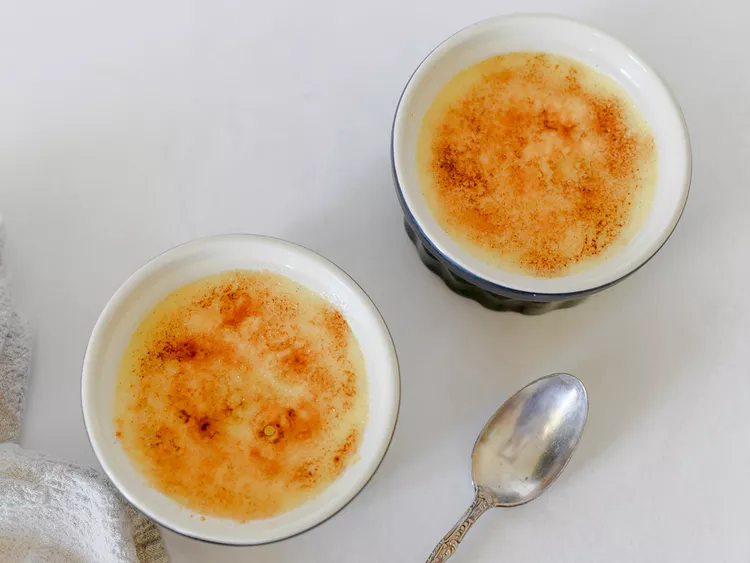

Vanilla Crème Brûlée

The finest dessert in my opinion.
This delicious crème brûlée is made with eggs, cream, sugar and vanilla paste for a more intense vanilla flavor. The caramelized sugar topping turns it into a sensational dessert!
Ingredients:
Dressing:
- 3 large egg yolks
- ¼ cup superfine sugar
- 1 teaspoon pure vanilla bean paste
- 1 cup heavy whipping cream
- 1 tablespoon superfine sugar
Steps:
- Place egg yolks in a bowl; beat with an electric mixer on high speed until eggs are thick and light yellow, about 5 minutes. Gradually beat in 1/4 cup sugar and vanilla bean paste.
- Pour cream into the top of a double boiler over simmering water and simmer until just hot to the touch, about 3 minutes. Pour 1/2 of the warmed cream into the egg mixture, a little at a time, whisking constantly so eggs do not curdle.
- Pour egg yolk-cream mixture into the remaining cream in the double boiler.
- Cook over medium heat, stirring continuously, until mixture thickens, 8 to 10 minutes. Do not let mixture boil.
- Pour custard into 4 small ramekins and refrigerate for a minimum of 2 hours, up to 24 hours.
- Sprinkle each crème brûlée with some of the remaining tablespoon of superfine sugar.
- Use a blowtorch to melt the sugar on top of the crème brûlée. It will crystallize as it hardens. Alternatively you can use the oven broiler, but be careful to not burn the sugar.
- Lightly tap the crystallized sugar with the back of a spoon to break it before eating.